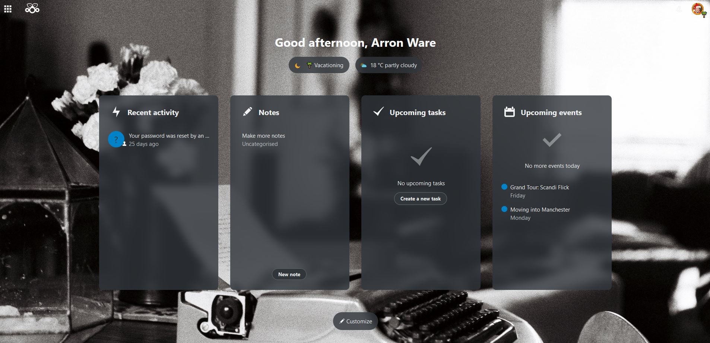

Arron Ware's Blog
In The Beginning...
13/09/22
Felt like making something, just passed my driving test today so I'm pretty chuffed with that.
Off to Uni in less than a week, flat mates seem sound, looking forward to it.
Just been doing a few mobile optimisation bits for other sites on the domain whilst I was making this one.
Never really had a blog before, see how it goes.
It's nothing fancy, but I enjoy having a decent online presence and hosting projects and stuff on here.
Got a Nextcloud server running on my Pi recently, works a treat and should be ideal for Uni
(especially having a Calendar/To Do list that will sync with my phone)

Should probably start packing soon, bubblewrap is on the way so we'll see how that whole
thing goes.